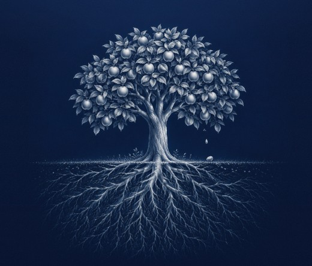
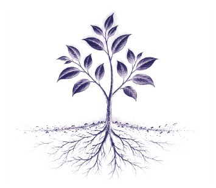
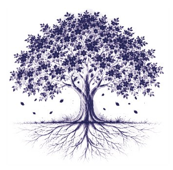
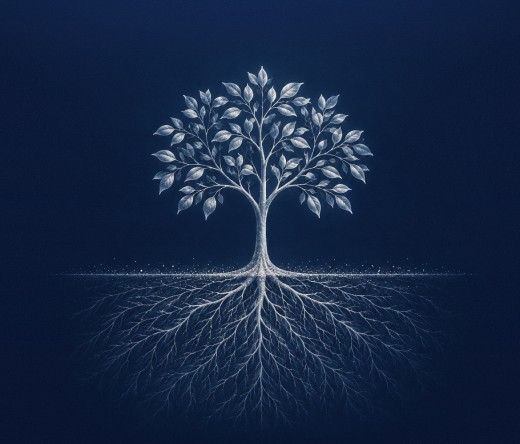
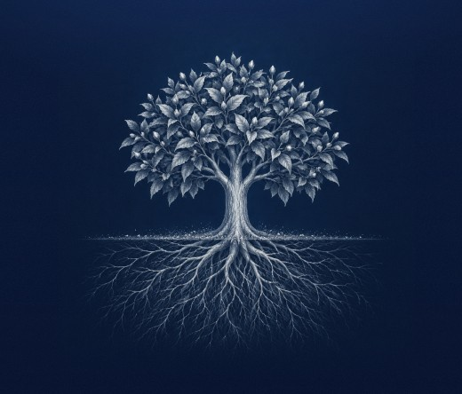
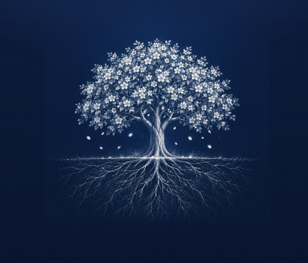
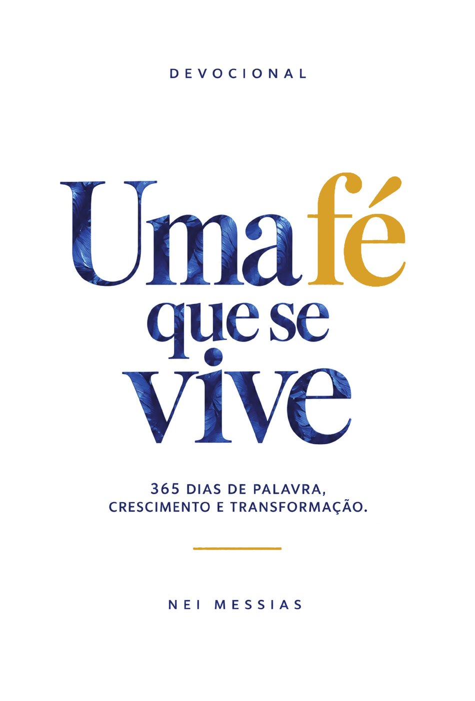

De semente a fruto2027 começa no dia 1. Comece com a Palavra aberta.
Envio a partir de 3/dez · Retirada grátis na Nasci Pra Deus
Todo dia, uma mensagem que vai fundo na Palavra e volta para a sua rotina, com algo para viver no mesmo dia.

Todo mês, uma mensagem em vídeo para refletir e se direcionar pela Palavra, e um planner com áreas de desenvolvimento, metas e objetivos.

Ao longo do ano, como uma semente que vai florescendo, os pequenos passos se somam, e o que era só ouvido passa a ser vivido.
Na pré-venda: dedicatória do Pr. Nei e opção para presente
Garantir o meu365 dias de Palavra, crescimento e transformação.



